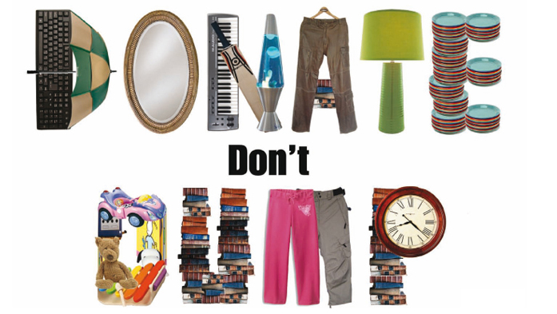

We are trying to bring helping hands together.

{kind=link}
Who we are?
Petit Clothing known PC house established in 2022 is an voluntary organization. This organization is a group of voluntary people of Brussels who are eager to help and belive that our small effort can make a difference in ones life.
why do we do?
- Donating your unwanted clothing can help you contribute to those in need. Due to the conflict in middle-east and low per-capita income, people are fleeing their country seeking safety of life and better oppurtinites. However as they step here, is not how it goes they have to sleep in street with no food and warm clothes to wear. In this scenario, it is surprising how appreciative people can be when you give away your old t-shirts to those who haven't had new clothes in a while.
- A surprising benefit of donating your clothing is that it can help organizations fight diseases. Some foundations accept clothing through their local chapters and use them for fundraising. By selling your donations, they can make profits that can significantly contribute to disease and illness research facilities. The contributions cover a multitude of fees, such as early screenings and education programs. So consider bringing in your old clothes to raise money for cancer and other life-altering illnesses.